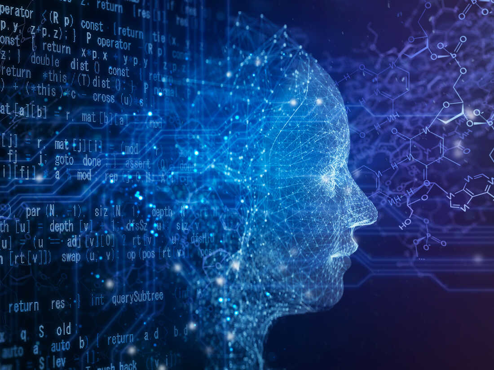
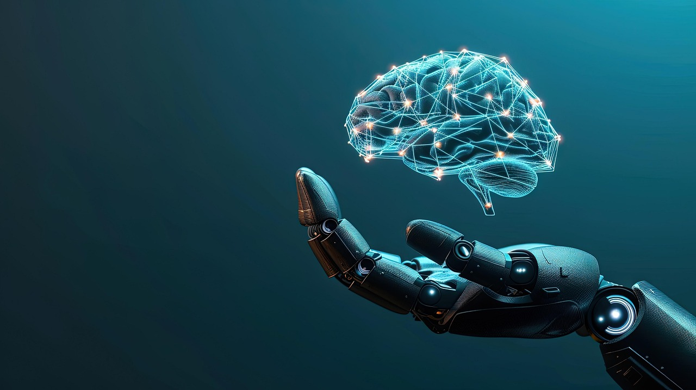

Ez a weboldal sütiket 🍪 (cookie-kat) használ a jobb felhasználói élményért. Adatvédelmi tájékoztató
Üdvözöljük a mesterséges intelligencia világában!
Ez az oldal a mesterséges intelligencia (AI) különböző aspektusait mutatja be, beleértve annak történelmét, fejlődését és alkalmazásait.
TovábbA mesterséges intelligencia szerepe és jelentősége a modern világban
A mesterséges intelligencia (AI – Artificial Intelligence) az informatika egyik legdinamikusabban fejlődő ága, amely azt a célt tűzte ki maga elé, hogy olyan gépeket és rendszereket hozzon létre, amelyek képesek az emberi gondolkodáshoz hasonló módon döntéseket hozni, tanulni, és problémákat megoldani. Az AI nem csupán egy tudományos fogalom, hanem napjainkra a hétköznapok szerves részévé vált – jelen van az okostelefonokban, keresőmotorokban, online ajánlórendszerekben, egészségügyben, iparban és még számos más területen.
A mesterséges intelligencia története az 1950-es évekre nyúlik vissza, amikor Alan Turing brit matematikus megfogalmazta a híres Turing-tesztet, amelynek célja annak eldöntése, hogy egy gép képes-e emberi szintű intelligenciát mutatni. Azóta a technológia hatalmas fejlődésen ment keresztül, különösen a számítási kapacitás növekedésének, a nagy adatmennyiséghez való hozzáférésnek és a fejlett algoritmusoknak köszönhetően.
Az AI-nak több ága van, például:
- Gépi tanulás (Machine Learning): az a képesség, hogy az algoritmusok adatok alapján javítják saját teljesítményüket emberi beavatkozás nélkül.
- Mélységi tanulás (Deep Learning): egy speciális gépi tanulási forma, amely mesterséges neurális hálózatokat alkalmaz, és különösen hatékony képfelismerésben, beszédfelismerésben és természetes nyelvfeldolgozásban.
- Természetes nyelvfeldolgozás (NLP): lehetővé teszi, hogy a gépek megértsék, értelmezzék és válaszoljanak az emberi nyelvre.
Az AI előnyei közé tartozik a hatékonyság növelése, az automatizálás, az adatelemzés gyorsasága, valamint az emberi hibák csökkentése. Ugyanakkor fontos etikai kérdések is felmerülnek, például az adatokkal való visszaélés lehetősége, a magánszféra védelme, illetve az, hogy bizonyos munkakörökben az embereket gépek válthatják fel.
A jövőben a mesterséges intelligencia várhatóan még nagyobb hatást gyakorol majd a társadalomra. A legfontosabb kérdés már nem az, hogy lehetséges-e az intelligens gépek léte, hanem az, hogy hogyan és milyen felelősséggel alkalmazzuk őket. A tudományos közösség és a társadalom közös felelőssége, hogy a mesterséges intelligencia fejlődése etikus, biztonságos és emberközpontú irányba haladjon.
A mesterséges intelligencia gyakorlati alkalmazásai
A mesterséges intelligencia napjainkra számos iparágat átalakított, és az élet szinte minden területén jelen van. A leglátványosabb változásokat talán az alábbi területeken tapasztalhatjuk:1. Egészségügy
Az AI képes diagnózisokat felállítani, orvosi képeket elemezni (például röntgen- vagy MR-felvételeket), sőt, még személyre szabott kezelési tervet is javasolni. Az intelligens rendszerek segíthetnek felismerni ritka betegségeket, vagy akár járványok előrejelzésében is szerepet játszhatnak. Chatbotok pedig képesek alapszintű egészségügyi tanácsokat adni, így tehermentesítve az orvosokat.
2. Oktatás
Az AI az oktatásban is új lehetőségeket nyit meg: személyre szabott tanulási útvonalakat hozhat létre, felismerheti a diákok gyenge pontjait, és segíthet a hatékonyabb tanulásban. Vannak már olyan alkalmazások, amelyek nyelvtanulást segítenek elő mesterséges intelligencia segítségével, sőt, a tanárokat is támogatják a tananyagok kidolgozásában.
3. Közlekedés
Az önvezető járművek fejlesztése már nem csak sci-fi – a mesterséges intelligencia képes felismerni a forgalmi helyzeteket, érzékelni a környezetet, és valós időben döntéseket hozni. Az ilyen rendszerek célja, hogy biztonságosabbá és hatékonyabbá tegyék a közlekedést, csökkentve a balesetek számát.
4. Ügyfélszolgálat és kereskedelem
Számos weboldalon és szolgáltatásnál már chatbotokkal találkozunk, amelyek automatikusan válaszolnak kérdéseinkre. Az AI segíti a cégeket abban is, hogy jobban megértsék a vásárlók szokásait, és személyre szabott ajánlatokat nyújtsanak számukra.
5. Kreatív ipar
Az AI nem csak számokkal dolgozik – ma már képes képeket festeni, zenét komponálni, sőt, novellákat vagy forgatókönyveket írni. Bár ezek a tartalmak gyakran vitákat váltanak ki az eredetiség és az emberi kreativitás kérdéskörében, tagadhatatlan, hogy az AI már a művészetek világába is belépett.
Kihívások és jövőbeli kilátások
Miközben a mesterséges intelligencia kétségtelenül óriási potenciált rejt magában, fontos, hogy a fejlődés ne csak technológiai, hanem társadalmi szempontból is fenntartható legyen. Az AI rendszereknek átláthatónak, megbízhatónak és etikusnak kell lenniük. Emellett a munkaerőpiacra gyakorolt hatásuk sem elhanyagolható: új munkakörök jönnek létre, mások viszont fokozatosan eltűnhetnek.
A legfontosabb tehát, hogy az ember ne a mesterséges intelligencia ellenfeleként, hanem szövetségeseként tekintsen rá – egy olyan eszközként, amely megfelelő kezekben jobbá teheti az életünket, hatékonyabbá a munkánkat, és új lehetőségeket nyithat a jövő generációi előtt.
A mesterséges intelligencia belső világa – egy technológia, ami tanul, ért, dönt
A mesterséges intelligencia nem csupán egy eszköz, hanem egy olyan technológiai paradigma, amely alapjaiban alakítja át, hogyan viszonyulunk a gépekhez és az információhoz. A lényege nem a gép, hanem a tanulás – mégpedig gépi tanulás (machine learning) formájában.
A gépi tanulás során algoritmusok nem előre programozott szabályok szerint működnek, hanem adatmintákból sajátítanak el viselkedést. Különösen a neuronhálók révén a rendszerek képesek olyan komplex döntéseket hozni, amelyek korábban kizárólag emberi gondolkodást igényeltek. A mélytanulás (deep learning) egy olyan speciális gépi tanulási technika, amely több rétegű mesterséges neurális hálózatokat használ – hasonlóan az emberi agy felépítéséhez.